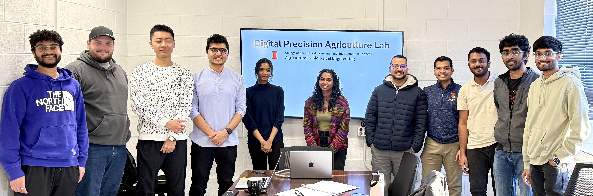

Welcome to the Digital Precision Agriculture Lab!

The strength of the team is each individual member. The strength of each member is the team - Phil Jackson
The Digital Precision Agriculture lab is located in the Agricultural Engineering Sciences building at Room #236 at the Department of Agricultural and Biological Engineering at the University of Illinois Urbana-Champaign, where I specialize in Computational Engineering for Digital Precision Agriculture. My research focuses on harnessing advanced data analytics and AI algorithms—ranging from simple models to state-of-the-art (SOTA) techniques—to process and interpret multi-source sensor data. These data streams include:
- Remotely sensed imagery (leveraging free and open-access platforms),
- Robotics sensing data (collected using the Farm-ng Amiga platform), and
- Machine sensing (from vision cameras mounted on agricultural equipment).
We are dedicated to developing data-driven decision support tools that empower farmers and stakeholders to make informed decisions ranging from seasonal management, understanding legacy effects, or enabling near real-time decision. By bridging the gap between technology and agriculture, our work aims to create innovative, practical, and impactful solutions for agriculture.
Passion for open source in agriculture
Our team is passionate about leveraging Free and Open-Source Software (FOSS) platforms for computer vision, geospatial analysis, and software tool development. We focus on designing workflows for analyzing images or any data formats from vision cameras or remotely sensed images using FOSS tools such as QGIS, R, ImageJ, and Python. We believe that the open-source culture promotes widespread access, fosters transparency, reproducibility, and ensures credibility and practicality for farmers and researchers.
Thank you for visiting! Explore our website to learn more about our research areas, meet our talented team members, and discover our publications, awards, and events. Together, we’re working toward a smarter, more sustainable future for agriculture.
Lab Updates
-
March 2025: Our team is excited to participate in the Farm Robotics Challenge 2025, organized by UC Agriculture and Natural Resources and the AI Institute for Next Generation Food Systems (AIFS), with support from the Fresno-Merced Future of Food Initiative (F3).
-
February 2025: Our talented team member, Pavan Kumar Dabilpuram, has joined Analog Devices in Wilmington, MA. We are proud of his contributions to our lab and wish him the very best in this exciting new chapter!